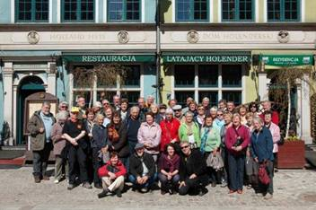
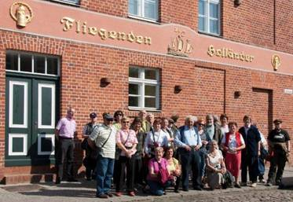
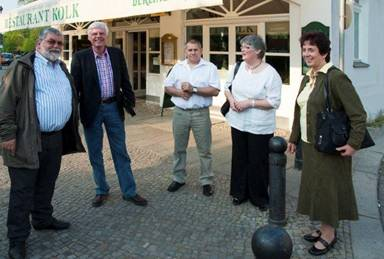
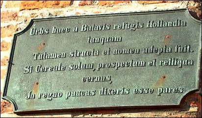
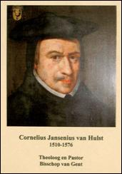

> nieuwsbrief
> 29e jg. - 3e trimester
2011
Mededelingen
Laatste
oproep hernieuwen ledenbijdrage 2011
In ruil voor een ongewijzigde basisbijdrage
van 25 € kunt u zich nog steeds verzekeren van een abonnement op
onze Nieuwsbrief Joris van Severen en van
het nieuwe Jaarboek De Nederlanden ‘extra
muros’. In ons vorig num-mer las u al méér over de rijke inhoud
van het
nieuwe jaarboek dat om-streeks midden mei verscheen, samen met – als
extraatje
- Nieuw Oud Vlaams van de hand van
Cyriel Moeyaert. Als steeds hopen we dat het handvol “achterstallige”
lezers –
ze kregen ondertussen al een herinnerings-brief aan - alsnog hun
ledenbijdrage
van 25 € zullen hernieuwen. Wie totnogtoe “in gebreke” bleef vindt
hierbij
andermaal een betaalformulier.
Robaais
zelfs geen “andermaal”?
In onze vorige Nieuwsbrief (p.
4) kwam Guido Vandevyvere andermaal aan het woord
in de “Robaais-Robeke”-discussie. Zijn opponent Gustaaf Calle-baut
reageerde
daarop – uiteraard niet onverwacht - in volgende bewoor-dingen:
“Dat bewijskracht voor historische
attestaties
aan een aantal hedendaagse ‘Toerkonje-‘ en ‘Robaais’-vormen wordt
toegeschreven
is hoogst vermakelijk. Indien dergelijke vormen door hun massale
voorkomen nog
méér bewijskracht gaan opleveren, wordt het opzienbarend.
Waar de aandrager van die ‘bewijzen’ uit
zichzelf weet waarom telkens ‘Robaais’ wordt gebruikt en daarmee zijn
eigen
vastgebeten gelijk bevestigd ziet, dan is dat nog belangwekkender.
Als in een kreupele slotzin wordt gesteld
dat niemand
de auteur ervan heeft kunnen overtuigen dat ‘Robeke’ niets
(sic) meer is dan een maakwoord… Ja, dan is het dus voor hem
wél meer! Allerletterlijkst. Dat soort zelf ‘interessant’ geheten
opmerkingen
kan zelfs geen ‘andermaal’ verdienen. Ze voegen niets toe aan het
debat, al
wenden ze dat wel voor.” Einde citaat.
N.v.d.r.: Mogen we ervan uitgaan dat we met
dit
woord versus wederwoord de discussie als gesloten kunnen beschouwen?
Alvast
te noteren
De Zannekin-Ontmoetingsdag 2011 zal
doorgaan te
Burtscheid (nabij
Aken) op zaterdag 19 november.
Alle info in
de
volgende Nieuwsbrief.
Voorstelling
van Radio
Uylenspiegel in het Vlaams
Michel Gars aan het woord te
Cassel op zaterdag 30 april 2011
n.a.v. de Studie-uitstap
N' eersten Nieuwjaermaend
1978,
Radio Uulenspeegel het begunt mit een uutzendinge voort egeeven van
Onze Lieve
Vrouwe Kerke van Kassel. In ’n dien tyd, ’n publyk dienst van Radio en
Televizje en gaef maer een kleëne plekke an de Vlaemsche Taele. N zin
van’n
oprichter van de Radio en effens dat wos:
- ‘t oundergaen van de vlaemsche
taele
te doen staen al neur een plekke geeven in de komunykaesjen,
- al ael d’aspekts van de
kuulteurele
en taelige identiteit van de Vlamingen van Vrankryke.
In 1978, ’n Staet hadde ’n
monopole van ’n radio. Radio Uulenspeegel en wos niet erkend van de
krachten en
meer of een keer verschuuwd. Achter de prezydentiele vooizingen van
1981 en ’t
begun van Filliouds wet, Radio Uulenspeegel wos erkend en rechtvaerdigd
van
d’audiovyzuele kracht.
D’associaesje, ereegeld mit de
wet van 1901, het zin van :
- ‘t
huushoud van Radio Uuilenspeegel,
- de
programs te maeken en uutzenden,
- de
bewaeringe van ’t vlaemsch erfgoed
op ael de manieren (taele, muuzyke, geschreeften, ekonomieje, bouwkunst
en
gewunten)
- de
lyber ekspresje van de Vlaemsche
menschen.
Radio Uulenspeegel klapt voor
d’officiele erkeninge van de vlaemsche kuul-teure en taele. Z’ is om de
menschen van Vlaenderen en van ’n Westhoek.
Mit neur situaesje en
hystorje, z’is natuurlik alzo veele om Vlaenderen in ael neur
deelneemers van
d’ hystoryke Nederlanden mit’ n Artois,’n Hainaut en de Picardie. Z’
integreert
neur alheele in Europa al een economyke, sociaele en kuulteurele
opleevinge van
Vlaenderen te voorstellen. Om nuuw, z’ uutzendt van Ryssel toet
Duunkerke, van
Boulogne toet Antwerpen en van Atrecht toet Oostende.
Radio Uulenspeegel is vom
d’heele menscheghyd van ael elden, te lande lik in’t stei, mit een
wyden gaft
van uutzendingen.
Me zyn een associatieve
subventionneerde radio (geen reklaeme)
M’ ontvangen de lokaele nieuws
en oek de lokaele associaesjen om een uutzendinge (ANVT, Houtland
Nature, SOS
Blootland, Yzer-Hoek)
Je kut nuus vinden op 91.8 FM
en oek op Internet al tikken: http://www.uylenspiegel.be.cx/
Willem
II
van der Marck (1542 – 1578),
Heer van Lummen, Admiraal van de
watergeuzen,
Stadhouder van Holland, enz. (erratum)
Willy
Alenus
 Wat de voetnoten (2) en (3)
betreft, hadden wij minder geluk. Of bezon-digden wij ons aan een iets
te
overhaaste aanpak en aan onverantwoord vertrouwen in minder betrouwbare
bronnen. Stambomen met de van der Marcken,
die zich ook van Arenberg noemen en het ook waren (in de betekenis van
“leden
van het geslacht van Arenberg”), is geen sinecure.
Wat de voetnoten (2) en (3)
betreft, hadden wij minder geluk. Of bezon-digden wij ons aan een iets
te
overhaaste aanpak en aan onverantwoord vertrouwen in minder betrouwbare
bronnen. Stambomen met de van der Marcken,
die zich ook van Arenberg noemen en het ook waren (in de betekenis van
“leden
van het geslacht van Arenberg”), is geen sinecure.
Van drie
van de huidige afstammelingen, vandaag prinsen van Arenberg, vernamen
wij (op
28 mei 2005), dat zij zelf ook problemen hebben met het ontwarren
van “life & times” van hun eigen voorouders en bloedverwanten.
Dat is trouwens een van de redenen waarom zij het “Archief
en Cultureel Centrum Arenberg (ACA) in Edingen hebben
opgericht dat vandaag, omwille van zijn internationale uitstraling, de
“Arenberg Foundation” wordt genoemd.
Niet
alleen heten alle feodale edellieden Engelbert, Everhard, Jan, Willem,
Maria,
Margaretha en Machteld of Mathilde, maar bovendien zijn alle gedrukte
biografieën hier en daar misleidend, soms zelfs de meest gezaghebbende.
Wij
vernoemen ze liever niet, - ze zijn immers terug te vinden op internet.
Samen met onze excuses voor één
of twee ook door ons gemaakte fouten of te haastige interpretaties en
deducties, raden wij met enige aandrang alle navorsers aan, verder te
zoeken,
een combinatie van research en recherche, zeker nu dat de
DNA-identificatie een
alsmaar belangrijker rol begint te spelen. Wat het stambomen
ter zake de feodale adel betreft, moet dat liefst op
basis van de zogeheten Europäische Stammtafeln,
die gebaseerd zijn op
authentieke akten worden gewerkt. “Jumping
to conclusions” moet ten allen
prijze worden vermeden.
Wat nu de Arenbergs en de door
een auteur geïnterpreteerde bronnen betreft, maken wij graag een
uitzondering
(en een aanbeveling) voor Jules de Chestret de Haneffe,
Histoire
de la maison de la Marck
y compris les Clèves de la seconde race, Liège, D.
Cormaux,1898.
xxiv, 374,
Ziehier
dan de tekst van de drie voetnoten, zoals zij reeds op 28 maart 2011
hadden
geformuleerd moeten worden:
Noten
1 Graaf
Jan de Ligne (1520–1568) ligt begraven in de crypte onder de kerk van
het
voormalige Kapucijnenklooster te Edingen, met het volgende grafschrift:
“Ici gist hault et puissant Messire Jean
de Ligne, prince, comte Darenberg et du
St Empire, lequel mourut le 23 May 1568,
en la bataille de Hercane (!), estant
Gouveneur de Frize, Overisel et Gruninck, combattant contre le
comte Lodevick de Nassau, rebel au Roy
et à Dieu et Sa Majesté. Priez
Dieu pour
son âme. “
2 Margaretha
(1527–1599) was de aarts-achter-achter achter-kleindochter van
Everhard II van der Marck, ‘le sanglier des Ardennes’ en
van Maria de Bracquemont en Sedan, via haar
vader Robrecht III, haar grootvader
Robrecht II, haar
overgrootvader Robrecht I, heer van Sedan en haar bet- overgrootvader
Jan II en
Anna van Virneburg.
(http://genealogy.euweb.cz/cleves/cleves10.html)
3 Lumey
was de aarts-achter-achter-achterkleinzoon van Everhard II van der
Marck, ‘le sanglier des Ardennes’ en van Maria de Bracquemont en Sedan,
via
zijn vader Jan II, zijn grootvader Jan I, zijn overgrootvader Willem I
“metten
baerd en zijn bet-overgrootvader Jan II en Anna van Virneburg; Everhard
III,
Robrecht I en Willem I waren broers, uiteraard.
(http://genalogy.euweb.cz/cleves/cleves10.html)
Sporen
uit de Lage Landen
in
de Weichseldelta
Een
terugblik
op onze meerdaagse verkenningstocht 16-23 april
2011, het
reisverslag
Johan Velghe
Een copieuze
maaltijd
“De
derde dag is cruciaal”, hield reisleider Leo Camerlynck
voor. Hij
putte die wijsheid uit een Amerikaanse studie over hoe deelnemers aan
meer-daagse conferenties, studiedagen, reizen… zich gedragen. Loopt het
onderling fout, dan gebeurt het gehaaid op de derde dag. Maandag 18
april, de
derde reisdag, rollebolde het 46-koppig gezelschap niet over de
straatstenen
van de Pruisische Hanzestad Thorn/Toruń en werden evenmin duels
uitgevochten in
Europa’s grootste bakstenen burcht, Mariënburg /Malbork.
De
reis verliep onder een goed gesternte. Met een bezoek aan Jan Heweliusz
(Dantzig) en Mikołaj Kopernik – naam waaronder vandaag Copernicus bekend staat in
Thorn/Torun en Frauenburg/Frombork - kon het moeilijk anders. Meer nog,
amper
Venlo uit, bemerkten we bij het uitrijden van de snelweg-parkeerplaats,
het
omen De Schatberg. Weinigen van het
busge-zelschap keken wellicht naar de in buxushaag geplante woorden,
maar de
reizende leden van Zannekin, Forum Vlaamse Vrouwen, Orde van de Prince
en Ons
Amsterdam zagen en ervaarden een week lang het invullen van dit gunstig
voorteken.
Voortrekkers
Leo Camerlynck,
Jan van Tongeren
en Luc Dequeker
ser-veerden dagelijks een copieuze maaltijd met aanschouwelijke lessen
kunstgeschiedenis als hoofdgerecht, oversaust met duiding over het
protestantisme, met relazen over de tijdsgeest van de grote trek
oostwaarts
vanuit de Bourgondische Nederlanden als dessert. Het voorgerecht
leverde Maurits
Cailliau af met
de 28 pagina’s tellende brochure met alle verwij-zingen naar de vele
sporen van
de Lage Landen in de Weichsel/Wisła-delta. Alles bovendien nog
overgoten met
pittige details en nimmer meer te vergeten ezelsbrugjes, zoals van
borst en
tepel om laatgotiek te onder-scheiden van de ronde barok. De rijke
maaltijd
werd gedegusteerd, samen met altijd opborrelende vragen en nimmer
ontbrekende
antwoorden, aan-vullingen en commentaren.
De
schattenberg werd vlot beklommen. De voornoemde drievuldigheid had zich
daarop
terdege voorbereid en de brochure gaf de ideale voorzet om vlot de
dagelijkse
mobiele lezingen te volgen. De schatten lagen voor het rapen. De grot
van Ali
Baba opende zich van Helmstedt in Nedersaksen, alover Stettin,
Mariënburg,
Tiegenhof, Thorn en Dantzig in Pommeren, tot Elbing en Frauenburg in
Pruisen
toe.
We
stelden ons niet tevreden met een of ander door de tand des tijds
half-weggevreten opschrift in laatmiddeleeuws Nederlands. We kregen
steeds
opnieuw een vol bord voorgeschoteld. Wie het niet met eigen ogen ziet,
gelooft
nauwelijks dat de sporen uit de Lage Landen er zo nadrukkelijk en
veelvuldig
aanwezig zijn. Zelfs niet te ontwijken zijn. Dat bij de momenteel aan
de gang
zijnde heropbouw van een stad als Elbing, om maar één voorbeeld aan te
wijzen,
de bouwheren hun inspiratie putten uit Vlaamse gotiek en Hollands
maniërisme,
onderstreept heel krachtig de blijvende impact van zovele bouw- en
kunstenaarsateliers, van zovele ambachtslui en landontginners, allen
afkomstig
uit de Lage Landen van de vijftiende tot de achttiende eeuw. Die
grootse
uitstraling van ambachtelijke vaardigheden, kennis, cultuur en
wetenschap werd
hap voor hap aangereikt én met smaak verorberd. Die kennisoverdracht
vormde
trouwens het cement van het hete-rogene reisgezelschap en voedde zovele
prettige tafelgesprekken tijdens middagpauzes en avondlijke buffetten.
We
zagen ons geconfronteerd met zovele gelijkenissen in architectuur,
retabels,
schilder- en beeldhouwkunst en landontginning met functionele wilgen-
en
grachtenlandschappen. Nihil novi sub sole:
de Ikea in Kamen is een eeneiige tweeling met de vestiging in Gent.
Vijfhonderd
jaar geleden lieten bouwmeesters gravures van hun ontwerpen en plannen
drukken
en verspreiden. Dat laatste tegen fikse betaling, hun ereloon.
Nihil novi sub sole (bis): de grote
tocht oostwaarts vanuit de door renais-sance en barok bezwangerde
Nederlanden,
krijgt vandaag zijn vervolg in zovele vestigingen in het noorden van
Polen van
ING-bank, KBC, Albert (Heyn), Auchan… Een tweede invasie.
Ontmoetingen
De
busmonologen van het voorgangerstrio lieten ons een schare historische
figuren
ontvangen. Zowel de bekeringsijveraar Liudger (Helmstedt), die zowel de
heidense Saksen én de ganzen het zwijgen oplegde, als Uilen-spiegel,
een kind
van deze regio die ooit een voorpost vormde van de kerkelijke
kolonisatie.
Voorpost die later opschoof naar Maagdenburg, Brandenburg, Pruisen,
Polen. We
reden vlotjes door het voormalig DDR-spergebied en kregen een beeld
opgehangen
van de 850 jaar eerder gehouden tocht vanuit Vlaanderen naar de
Fläming. Luc
Dequeker had het liever
over de reformatie dan over het protestantisme, het reformeren van de
leer van
de Kerk om tot een strikt christelijk georganiseerde maatschappij te
komen.
Maar Maarten Luther is nog steeds niet gerehabiliteerd door de Roomse
Kerk,
evenmin Jan Hus, wiens ”ketterij’’ aanleiding gaf tot de stichting van
de Leuvense
universiteit. Hus hield op de brandstapel voor dat hij slechts een gans
was,
daar waar honderd jaar later een zwaan (Luther) zou opstaan…
In
een etnografische historiek ontmoetten we Pruisen, Mazuriërs, Polanen,
Kasjoeben en volgden de Drang nach Osten
bij de germanisering door de Duitse Orde tot tegen Sint-Petersburg aan.
We
maakten kennis met de Hohenzollern die van Frankenland naar Brandenburg
trokken
om er zich te kronen. We zagen op de Grote Markt, de rynek
van Posen/Poznan renais-sancegevels zoals op de Antwerpse en
Brusselse Grote Markt. We fristen onze kennis over Vlaamse (hele molen
draait)
en Hollandse (bovenkruiers) windmolentypes op aan de hand van
exemplaren die
het landschap beheer-sen in de omgeving van Gnesen/Gniezno. We werden
geïmponeerd door de bronzen deuren (anno 1100) in wat ooit de eerste
Poolse
kathedraal was, en nog meer door het met zuilen van Salomon omgeven
zilveren
schrijn van Adalbert, de evangelisator van Pruisen.
Midden: Maria Adamiak, docente Nederlands,
gidste ons in Thorn
Docente
Nederlands Maria Adamiak verwelkomde ons in Thorn/Toruń, Hanzestad die
zich
richtte op Brugge en vandaag een ware getuigenis vormt van de
baksteengotiek,
met de Brugse Sint-Salvatorkathedraal en O.L.Vrouw-kerk als
inspiratiebronnen.
De Franciscanerkerk vormde het decorum voor gerichte lessen
kunstgeschiedenis
en liet ons de trappen van zaligheid bestijgen tot in de zevende hemel
toe. We
dienden hiervoor niet eens de Scale Santa te nemen. De woorden van Jan van Tongeren
waren
voldoende. En we weten voortaan waarom zovele gasthuizen in de
Nederlanden de
naam Elisabeth dragen/droegen en dat de gesausde bakstenen gevels
aanleiding
vormden om zovele panden namen te geven als In
de rode hoed, In de rode haan. In Thorn schaarden we ons rond
Copernicus’
doopvont en hoorden er de serafijnen bazuinen. Waarom een getrouwde
vrouw aan
de rechterzijde van de man dient te lopen, is een vraag die we
beantwoord
kregen. We ontmoetten er Reinout, de oudste van de Vier Heemskinderen,
als
bouwmeester. Luc
Dequeker
liet ons kennis maken met kanunnik Copernicus, medicus, kerkelijk en
burgerlijk
rechtsgeleerde, medicus… en niet op de brandstapel geëindigd. Leo Camerlynck
schetste
het wel en wee door de eeuwen heen van de Duitse Orde, de Orde van de
Hospitaalridders, de Ridders van het Heilig Graf… en hoe de Duitse Orde
in
Mariënburg/ Malbork verzeilde en er een staat in de Poolse staat
vestigde..
Friese Menno-nieten (anabaptisten) deden in de nabijheid van Dantzig/ Gdańsk aan landwinning en landbouw. De gemeenschap werd
bij
de Sovjetinval in 1945 verdreven. Enkel hun begraafplaats rest.
Met
de tram ging de ochtendlijke tocht van het hotel aan het Oostzeestrand
naar het
centrum van Dantzig/Gdańsk, stad waar de in Nederland overleden
Fahrenheid werd
geboren; stad van astronoom Jan Heweliusz die in Nederland in de leer
ging;
stad waar de Hollandse kolonie bijeen kwam in de Sint-Nicolaaskerk;
stad waar
Cornelis Floris, Antonis van Opbergen, Laureins van Steenwinckel,
Tielman van
Gameren, Wilhelm van den Blocke… tot Hans Memling toe, hun stempel op
drukten.
Hals- en tuit-gevels, net zoals in Amsterdam, vullen hele straten.
Dantzig/Gdańsk
presenteert zich vandaag als het Amsterdam van Oost-Europa, hoge
stoepen
inbegrepen.
Arthur
Schopenhauer liet z’n huis na. Het staat momenteel te koop voor 850.000
euro.
Dantzig/Gdańsk was economisch belangrijker voor Amster-dam dan de hele
V.O.C. Bij
aanvang van de zeventiende eeuw werden er niet minder dan 68
kunstenaars uit de
Nederlanden geregistreerd. De historische site van de Lenin-scheepswerf
in
Gdansk ontbrak niet op het reismenu, door Leo Camerlynck
gekruid
met een hele geschiedenishap van de vele opstanden na 1945 in de
communistische
landen.
Windmolen en
Dathenus zoek
Niet
de derde, maar de vijfde reisdag zorgde voor enige pech. De gezochte
Vlaamse
windmolen bleek tijdelijk gesloopt voor restauratie en hetzelfde lot is
de
grafsteen van de Casselnaar Petrus Dathenus beschoren. Een vergeefse
zoektocht
in Tiegenhof/Nowy Dwór en Elbing/Elbląg voor gevolg.
In
voornoemde stad keek de Madonna-in-weke-stijl ons aan en zelfs de os en
ezel
van de kerststal leerden ons dat alles in het Nieuw Testament vol
symboliek
steekt.

Het reisgezelschap voor het restaurant ‘De
vliegenden Hollander’ te Dantzig
In
het nog noorderlijker geleden en goed bewaarde Frauenburg/Fromborg,
nabij de
Russische grens van Koningsbergen/Kalinnigrad, begroetten we het graf
van
Copernicus.
We
bleven bij de les toen tekst en uitleg werd verschaft over de Hanze,
een
economisch verbond met privilegies voor steden in andere Hanzesteden.
In
Stettin/Szczecin wachtte Catharina de Grote, met Zeeuws- en
Fläminger-bloed in
de aderen ons op in haar burcht. En een overzonnig dagje Berlijn liet
ons
genieten van een wereldstad met klasse, van de opmerkelijke en best
gezellige
stadswijk Holländerviertel in Potsdam en het intieme Käthe
Kollwitz-museum.
Een
copieus reismenu dus.
En
wat zullen we ook niet snel vergeten? De winterlucht die zovele kerken
nog in
haar greep hield, de herten en nestelende ooievaars, het weidse Poolse
landschap, de zovele met EU-financiën in uitvoering zijnde
stadsrenovaties en
(snel)wegenaanleg, de streepjes hedendaagse poëzie gebracht door Jos de
Decker,
de veilige rijstijl van chauffeur Jef, en als Bourgondiërs uiteraard
ook de
copieuse ontbijt- en avondbuffetten, en niet in het minst het Pruisisch
avondmaal op Karfreitag in het
Spandause restaurant Kolk, met inbegrip van de ‘berenvang’ en het
Dantziger
Gold-wasser.

En ook te Potsdam konden we in ‘De vliegende
Hollander’ terecht

Leo Camerlynck met
onze gasten uit de Fläming aan het restaurant Kolk te Berlijn
[Foto’s:
Leen van den Abeele en Roger Pylyser]
Stedeken
Holland – Preussisch Holland – Paslek
Medereiziger Luc Dequeker
ondtdekte aldaar de Latijnse
inscriptie op het
Stadhuis (metaalplaat):

Urbs haec a
Batavis refugis Hollandia
tanquam
Tutamen structa et
nomen adepta fuit.
Si Cereale solum,
prospectum et relliqua
cernas,
In regno paucas
dixeris esse pares.
Vertaling met hulp van Latinist collega
Gilbert
Tournoy, KULeuven:
Deze stad werd
door Bataafse uitwijkelingen als beschutting gebouwd en kreeg (van
hen) de
naam Hollandia.
Als je het
vruchtbare bouwland, het algemeen uitzicht en de rest zou overwegen,
dan zal je
kunnen stellen dat er maar weinige steden in het (Duitse) Rijk aan haar
gelijk
zijn.
Cornelius
Jansenius van
Hulst (1510-1576)
Vorig jaar
was het vijfhonderd jaar geleden dat Cornelis
Jansen in Hulst het levenslicht zag. Cornelis Jansen, meer ge-kend
onder zijn
Latijnse naam Cornelius Jansenius, werd een vooraanstaand theo-loog,
Bijbels
humanist en hoogleraar en vooral een gedreven pastor en bisschop in een
tijd
van geloofshervorming en staat-kundige verandering. Hij was derhalve
een
tijdgenoot en bekende van onder andere Filips II, Margaretha van Parma,
Willem
van Oranje en Alva.
Zijn geboortejaar mocht niet ongemerkt
passeren. Over
Jansenius is in het verle-den wel gepubliceerd, maar de publicaties
waren
slechts encyclopedisch van aard of beperkt van omvang. Een samenhangend
en
uitgebreid verhaal over zijn persoon in de context van zijn tijd
bestond nog
niet. Daarom nam de Oudheidkundige Kring ‘De Vier Ambachten’ het
initiatief tot
een meer uitgebreide en dieper gravende publicatie. Dit initiatief
leidde tot
een spontane samenwerking van personen, voornamelijk streekgenoten, die
elk
vanuit hun vakgebied hun licht wilden laten schijnen op het leven en
werk van
deze grote Hulstenaar. Zo plaatsten Wil Brand (archivaris van het
bisdom
Breda), Johan Decavele (voormalig hoofd van het departement van Cultuur
van de
stad Gent en publicist), Jan de Kort (theoloog en
godsdiensthistoricus), Jan
Lockefeer (historicus), Antoine Prinsen (archivaris van Hulst) en
Honoré
Rottier (historisch geograaf en publicist) zich gezamenlijk voor de
niet
geringe opdracht om in minder dan een jaar een grondige publicatie voor
te
bereiden.
De samenwerking tussen de auteurs heeft
geleid tot een
boek dat op een historisch en theologisch verantwoorde wijze een beeld
geeft
van Jansenius en de betekenis van zijn persoon voor kerk en samenleving
van
zijn tijd. De auteurs denken in het gestelde doel geslaagd te zijn. De
veranderende samenleving en leefomgeving van de zestiende eeuw in de
Nederlanden worden beschreven door Honoré Rottier, terwijl Antoine
Prinsen zich
heeft gebogen over bestuurs- en geloofspraktijk in Hulst in die tijd.
Wil Brand
beschrijft de familierelaties van Jansenius en zijn contacten met zijn
geboortestad.
De tijd van de reformatie in Vlaanderen en de plaats van Jansenius
daarin
worden behandeld door Johan Decavele. Jan Lockefeer schetst een
biografie van
Jansenius, nu niet encyclopedisch, maar geplaatst in de
tijdsomstandigheden en
dikwijls gebaseerd op nieuw ontdekte gegevens. Jan de Kort tenslotte
geeft op
basis van de werken van Jansenius inzicht in het belang dat deze
theoloog en
pastor heeft gehad in de tijd van de contrareformatie. Hij hoopt
daarmee
Jansenius van Hulst uit de schaduw te doen treden van zijn naamgenoot
uit een
latere generatie, Jansenius van Leerdam, bisschop van Ieper, wiens Augustinus
ondermeer bijdroeg aan het ontstaan van wat nu heet de Oud-Katholieke
Kerk van
Nederland.
Het initiatief van de Oudheidkundige Kring
De Vier Ambachten
om Jansenius te herdenken is ook omarmd door het kerkbestuur van de
Hulster
Sint-Willibrordusbasiliek. Onder gezamenlijke verantwoordelijkheid en
met steun
van de gemeente Hulst, vindt zaterdag 6 november in de basiliek een
academische
zitting plaats. Hierin zal Peter Nissen, hoogleraar aan de Radboud
Universiteit
in de Cultuurgeschiedenis van de religiositeit, in het bijzonder vanaf
de
vroegmoderne tijd, een academische oratie houden over de ontwikkeling
van het
bisschopsambt vanaf Jansenius tot nu. Op zondag 7 november zal de
huidige
bisschop van Gent, Mgr. Luc van Looy, zijn voorganger tijdens een
pontificale
dienst in Hulst herdenken. De verschillende kerkgenootschappen worden
hierbij
uitgenodigd. In beide bijeenkomsten zal het boek worden gepresenteerd
en
toegelicht. Parallel worden in de loop van dit jaar tentoonstellingen
ingericht
rond het werk en de persoon van Jansenius in de Librije en het museum.
Jan de Kort & Jan Lockefeer
Vanaf
de
zijlijn
Het is geen verloren zaak
Dat is de slotsom van de
studie die Joachim Strybny uit Norden gewijd heeft aan het Platduits
zoals het
in Oost-Friesland gesproken wordt. Deze conclusie staat haaks op de
uitspraken
van de onheilsprofeten die verkondigen dat de streektaal op sterven na
dood zou
zijn. Op basis van het door Strybny aan het licht gebrachte
feitenmateriaal kan worden vastgesteld
dat er een keer ten goede heeft plaatsgevonden. In het Oostfriese
“Tweesprakenland” is de overlevingskans van het Oostfreeske Platt een
reeele
aangelegenheid. Ze is zelfs veel sterker verankerd als vermoed werd.
Bij de
voorstelling van Plattdeutsche
Sprachlandschaften in Ostfriesland slaakte de landschaftspresident
Helmut
Collman dan ook met recht een zucht van opluchting die hij onder
woorden bracht
met: “Dat is een gelukkig toeval voor Oost-Friesland”.
Het opmerkelijke van deze
studie is dat ze geshreven is door iemand die niet uit deze regio
geboortig is.
Strybny is de zoon van uit Silezië afkomstige vluchtelingen. In de
omgang met
zijn vrienden leerde hij de streektaal. Vanaf die tijd heeft hij zich
voor deze
taal geïnteresseerd. Zo vertelt hij dat iedereen die bij hem over de
vloer kwam
plat sprak; dat was voor hen de gewoonste zaak van de wereld.
Tegelijkertijd
moest hij steeds weer horen dat het Oostfriese Platt weliswaar een
belangrijk
cultuurgoed was, maar dat het binnen afzienbare tijd gedoemd zou zijn
uit te
sterven.
Deze negatieve houding
irriteerde hem in hoge mate en is voor hem dé aansporing geweest tot op
de
bodem uit te zoeken wat daarvan waar was. Zo werd hem duidelijk dat die
klaagzangen gedateerd waren; ze bleken al geklonken te hebben vanaf
1744, het
jaar waarin Pruisen het in Oost-Friesland voor het zeggen had gekregen.
Immers
met het overnemen van de macht in dit gewest deed ook het Hoogduits
zijn intrede
als ambtelijke taal. Voor het Nederlands had dit tot gevolg dat het
consequent
werd tegengegaan als kerktaal en voor het Nederduits dat de deur in de
richting
van het dialect steeds wijder open kwam te staan.
In de herfst van 2006 sprak de
Ostfriesische Landschaft zijn bezorgdheid over het behoud en de
toekomst van de
streektaal uit. Maar daar bleef het niet bij want tegelijkertijd werd
vastgesteld dat er voldoende mogelijkheden waren voor een naast elkaar
bestaan
van Hoog- en Platduits. Strybny heeft daar met zijn onderzoek op
ingehaakt en
duidelijk gemaakt dat het Platduits nog een hoge pretentie heeft.
Het is tegen deze achtergrond
dat hij zich is gaan verdiepen in de onderzoeksresultaten uit het
verleden. In
1943 stelde Hans Janssen vast dat in Oost-Friesland 75 tot 100% van de
bevolking Platduitstalig was; dit gold niet voor de steden waar men
“tevreden”
moest zijn met percentages die schommelden tussen 50 tot 74%. Dit toch
redelijk
positieve beeld onderging een gevoelige verandering in de naoorlogse
jaren.
Twee factoren brengt Strybny ter sprake. Het eerste heeft betrekking op
de
gevolgen van de volksverhuizing: vele vluchtelingen uit het oosten
kregen
onderdak in Oost-Friesland,wat de verhoogduitsing gevoelig deed
toenemen. Maar
de andere was van interne aard: steeds meer ouders begonnen met hun
kinderen
Hoogduits te praten in het vermeende belang van hun
toekomstmogelijkheden.
Om de huidige stand van zaken
met betrekking tot de streektaal te inventariseren heeft hij een
doelgerichte
en wetenschappelijk verantwoorde vragenlijst opgesteld bestemd voor de
leerlingen in de klassen 5 tot en met 13 van 12 middelbare scholen. In
totaal werden
13123 van deze lijsten uitgedeeld waarvan er 10028 terugkwamen (= 77%).
Eén van de uitkomsten is dat
op de geestgronden meer Platduits gesproken wordt dan in het
polderland. Ook
moet rekening gehouden worden met een urbanisatie-effect; daarmee wordt
bedoeld
de stadsuitbreidingen die voornamelijk bevolkt worden door mensen die
niet in
Oost-Friesland geboren zijn. Met een keur aan percentages worden de
uitkomsten
van dit onderzoek “uitgestald”. Ze maken duidelijk dat voor het
officiële
verkeer het Hoogduits hoog staat aangeschreven, maar dat als het erom
gaat
gevoelens onder woorden te brengen men die bij voorkeur in het Plat
uitdrukt.
Vastgesteld is dat – als men
de huidige situatie vergelijkt met die van vroeger – er sprake is van
een
toenemende bemoeienis die gericht is op het behoud van de streektaal.
Van grote
betekenis is in dit verband de aansturing door het Plattdütskbüro van
de
Ostfriesische Landschaft. De uitdaging waarvoor men in deze regio staat
is de
kloof te overbruggen tussen de ouders/grootoudersgeneratie en de
huidige jeugd.
Om het met de woorden van Strybny weer te geven: “De belangrijkste
opdracht van
de huidige Platduits-sprekende oudergeneratie is hun kinderen deze taal
bij te
brengen en hen bewust te doen worden van het instandhouden van deze
taal en de
daarmee verbonden culturele waarde. Dat moet in Oost-Friesland de
voornaamste
opdracht zijn.”
__________
Bron: Ostfriesland
Magazin, 2010/9.
PS: Voor belangstellenden laat
ik hieronder de gegevens volgen van de aan bovenstaand onderzoek
gewijde
publicatie: Joachim Strybny, Plattdeutsche
Sprachlandschaften in Ostfriesland, uitgave Ostfriesische
Landschaft,132
pp., ISBN 978-3-9406018-7, prijs; 14,80 €.
Het
laatste
woord
Sporen uit de Lage Landen
in Rusland
De
Russische nationale luchtvaartmaatschappij heet “Aeroflot” АЗРОФЛОТ,
een
Russische gsm-operator heet “Vjimpel” ВИМПЕЛ, een sinaasappel heet in het Russisch “appjelsien”
АППЕЛСЙН, en een matroos
“matros” МАТРОС. De “-flot” in “aeroflot” stamt af van het Nederlandse
woord
“vloot”. Een vlaggetje of wimpel is het logo van de gsm-firma “vjimpel”.
Meer
dan duizend Nederlandse woorden zouden in de Russische taal
binnengeslopen
zijn. Hoe komen die daar terecht? Waren er dan bevoor-rechte contacten
tussen
onze Lage Landen en Rusland?
Al in
de middeleeuwen werd handel gedreven vanuit Antwerpen en andere steden
uit de
historische Nederlanden. Vooral met de Hanzestad Novgorod waren er heel
wat
uitwisselingen, hoofdzakelijk via de Noord- en Oostzee.
In
de zeventiende en achttiende eeuw intensiveerde de handel met Rusland.
De
rondreizende handelaars uit de Kempen en de Nederrijn, “Teuten”
ge-naamd, en de
“Rusluien” uit het Twentse Vriezenveen gebruikten de “Vlämische Straße”
via
Noord-Duitsland, Polen, Koningsbergen, Memel, naar Novgorod en later
Sint-Petersburg, waar o.a. Nederlandse panden wer-den opgetrokken in de
Nevski
Prospekt en de Gostinny Dvor. Er werd ook een Hollandse kerk gebouwd.
Mede
door toedoen van tsaar Peter de Grote (1672-1725), de stichter van
Sint-Petersburg, kwamen geprivilegieerde betrekkingen tussen Rusland en
de Nederlanden,
zowel de noordelijke als de zuidelijke, tot stand. De wijk “Novaja
Gollandija”
(Nieuw Holland) en het majestueuze paleis en domein met de Nederlandse
naam
“Peterhof” groeiden samen met de Mechelse beiaard, de “Maljinovji Zvon”, in de Petrus-
en Paulusvesting stilaan uit tot
pronkstukken van de plaatselijke architectuur en cultuur.
Peter
de Grote sprak en schreef Nederlands.
Tsarina
Catharina II Aleksejevna werd te Stettin, nu het Poolse Szczecin in
1729
geboren als Sophie Augusta Frederika, prinses van
Anhalt-Zerbst-Domburg. Door
haar aderen vloeide Fläminger- en Zeeuws blauw bloed. In haar
keizerlijk paleis
van Tsarskoje Siëlo verzamelde ze Delfts blauwe voorwerpen, doeken van
Rembrandt, Rubens, Frans Hals, Jan Steen en gravures van David Teniers
en
Filips Wouwerman, kunstenaars uit de noordelijke
en zuidelijke Nederlanden, voor wie ze heel wat belangstelling en
bewondering
koesterde. Ze overleed in haar keizerlijk paleis op 17 november 1796.
Reeds
vanaf het einde van de 16e eeuw tot het midden van 19e eeuw trokken
doopsgezinde families van Mennonieten, volgelingen van de Friese
predikant
Menno Simonszoon, doorheen Rusland tot zelfs in het verre Siberië, waar
heden
nog steeds het Mennonietendorpje “Neodatsjno” bestaat in de buurt van
Novosibirsk. Tot in het begin van de 20e eeuw werden preken in het met
Neder-
en Hoogduits doorspekt Nederlands gehouden. Ook de kleuren van de
Russische
vlag, zijnde horizontaal wit, blauw, rood, zouden volgens de
overlevering
ontwikkeld zijn door Tsaar Peter de Grote, die na zijn bezoeken aan
scheepswerven in de Nederlanden ook de vlag van zijn rijk gebaseerd zou
hebben
op de Nederlandse Prinsenvlag. Het Russische woord “flag”Флаг is
trouwens
afkomstig uit het Nederlands, net als “flagsjtok” флагшток overigens. Deze vlag bleef
in gebruik tot 1914 en
werd in 1991 opnieuw de officiële driekleur van Rusland.
Nederlandstalige boeken
voor Waalse en Frans-Vlaamse studenten
Docenten
Nederlands voor anderstaligen willen hun collega’s en de studenten
graag
adviseren bij de keuze van leesboeken en de samenstlloing van
leeslijsten.
Zodoende gaan we opzoek naar recent en oorspronkelijk in het Nederlands
vertaalde boeken.
Maar
nu kunt u uw steenje bijdragen mits het formulier op www.princedingen.eu
(klik op boekenforum) binnen te halen en te klemmen, naar uw pc te
kopieren, in
te vullen en door te mailen naar ingecallebaut@telenet.be.
boek-ed-inge-n: boek omdat het om oorspronkelijk
Nederlandstalige boeken gaat, die gerecenseerd en aanbevolen worden. edingen omdat het een
initiatief is van
de Orde van den Prinse “Land van Edingen”. inge,
omdat Inge Callebaut de initiatiefneemster is.
Wat
beoogt men met boek-ed-inge-n?
Indien u een recent
Nederlandstalig
boek gelezen hebt, kunt u ons helpen mits de titel, de auteur, de
uitgever, het
genre en de projs te melden en tevens neen samenvatting of een recensie
te
maken. De boeken mogen van uiteenlopende aard zijn.
Leo Camerlynck
Edouard Michielsstraat 51, B – 1180 UKKEL / Brussel
e-post: leo.camerlynck@skynet.be
- t. 00 32 485 63 02 27